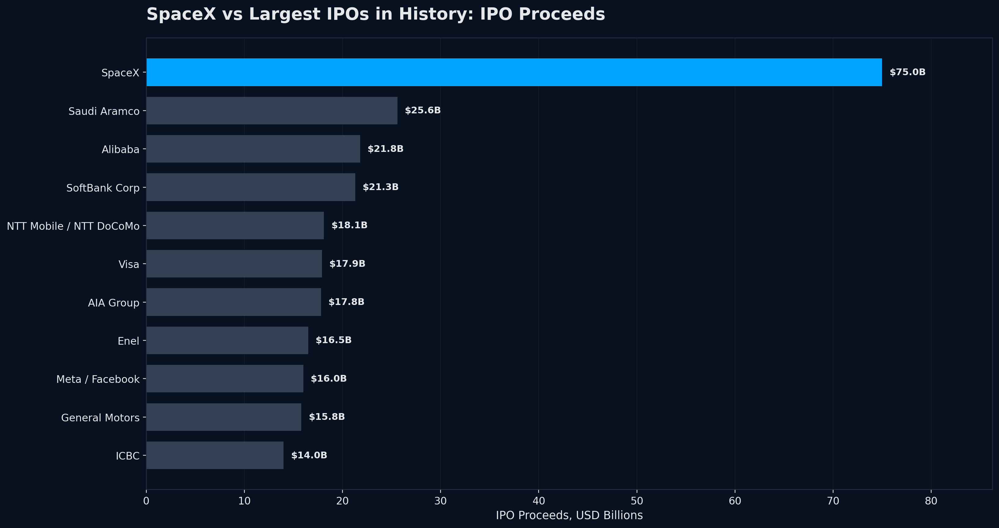
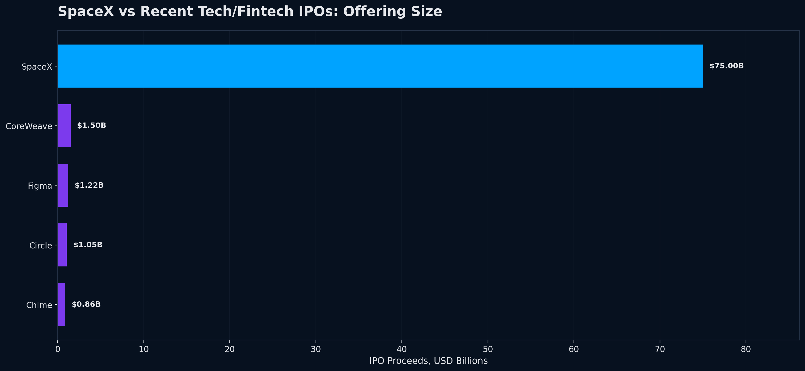
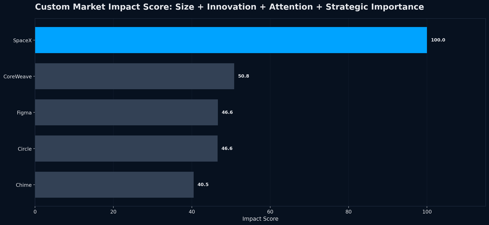
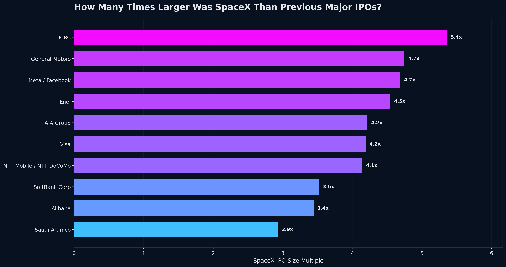
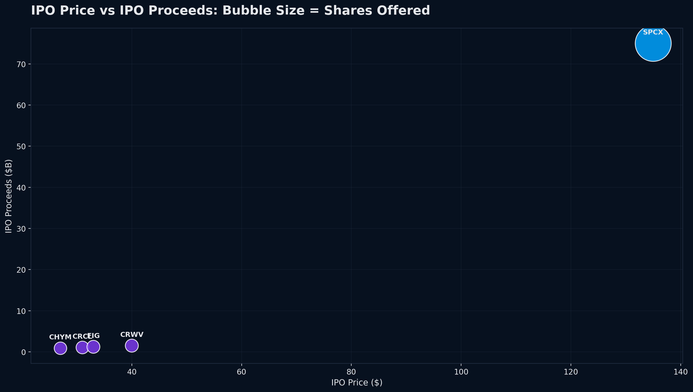
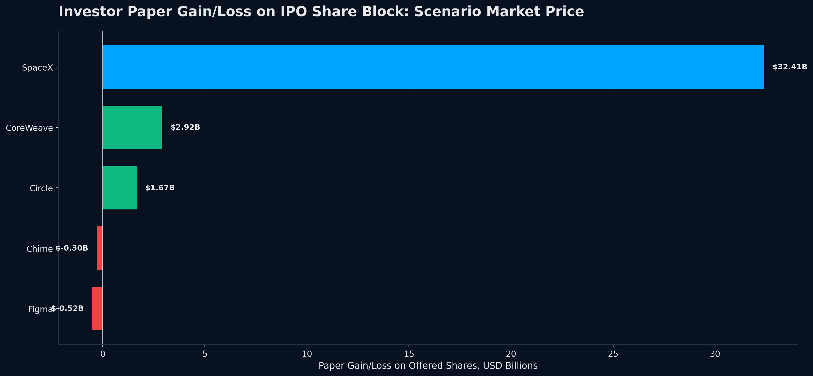
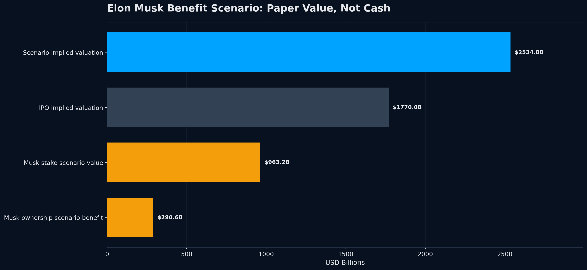

This report analyzes the SpaceX IPO through historical IPO comparisons, recent IPO peer comparisons, investor paper-gain scenarios, and Elon Musk ownership-benefit scenarios. The focus is not only stock return; it is size, liquidity, investor attention, sector influence, and market narrative.
SpaceX is different because it combines reusable rockets, Starlink satellite internet, government and defense contracts, AI infrastructure potential, global brand power, and retail investor attention. Its IPO scale makes it a market event rather than just a normal company listing.
Important: Musk and investor benefits are paper-value scenarios, not guaranteed cash profits. Realized gains require selling shares and depend on market price, lockups, taxes, and liquidity.
| company | ticker | sector | ipo_proceeds_b | spacex_size_multiple | share_of_recent_peer_group_pct | market_impact_score |
|---|---|---|---|---|---|---|
| SpaceX | SPCX | Space / Satellite Internet / AI Infrastructure | 75.00 | 1.00 | 94.18 | 100.00 |
| CoreWeave | CRWV | AI Cloud Infrastructure | 1.50 | 50.00 | 1.88 | 50.80 |
| Circle | CRCL | Fintech / Stablecoins | 1.05 | 71.16 | 1.32 | 46.56 |
| Figma | FIG | SaaS / Design Software | 1.22 | 61.53 | 1.53 | 46.65 |
| Chime | CHYM | Fintech / Digital Banking | 0.86 | 86.81 | 1.08 | 40.46 |
| company | ticker | ipo_price_usd | scenario_market_price_usd | paper_return_from_ipo_price_pct | paper_gain_on_offered_shares_b |
|---|---|---|---|---|---|
| SpaceX | SPCX | 135.0 | 193.33 | 43.21 | 32.41 |
| CoreWeave | CRWV | 40.0 | 117.95 | 194.88 | 2.92 |
| Circle | CRCL | 31.0 | 80.23 | 158.81 | 1.67 |
| Figma | FIG | 33.0 | 18.88 | -42.79 | -0.52 |
| Chime | CHYM | 27.0 | 17.60 | -34.81 | -0.30 |
| assumption | value_b | explanation |
|---|---|---|
| IPO implied valuation | 1770.00 | Approximate SpaceX value at IPO pricing. |
| Scenario implied valuation | 2534.77 | IPO valuation scaled by scenario market price divided by IPO price. |
| Total valuation increase | 764.77 | Paper market value increase from IPO valuation to scenario valuation. |
| Musk ownership scenario benefit | 290.61 | Scenario paper gain assuming 38% ownership. Not cash unless shares are sold. |
| Musk stake scenario value | 963.21 | Scenario value of ownership stake assuming 38% ownership. |







This project is for education, analytics, and portfolio demonstration only. It is not investment advice.